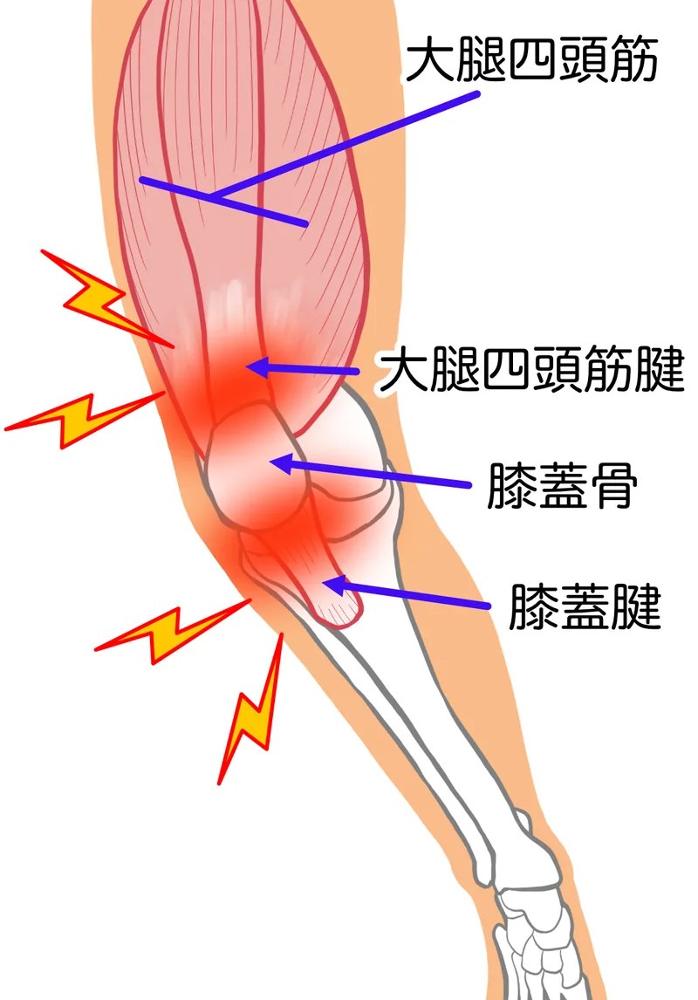

01
骨盤が左右へ傾きやすい
片脚で支えるときに骨盤が安定しないと、太ももの外側が張りやすくなります。
「膝の外側がズキズキ痛む」「歩くたびに外側が引っかかる感じがする」——
その痛み、股関節と骨盤のバランスが崩れているサインかもしれません。
柏市・柏駅周辺で膝の外側の痛みにお悩みの方へ
整体院ひざこぞうでは、膝の外側だけでなく、股関節、足首、骨盤、歩き方や重心移動を確認します。膝の外側へ負担が偏りにくい身体の使い方を一緒に整理します。
膝の外側は、股関節から続く組織や膝関節の外側に負担が集まりやすい場所です。
坂道や長く歩いたあと、走ったあとなどに骨盤が傾いたり、膝とつま先の方向がずれたりすると、外側へ繰り返し負担が加わることがあります。
腸脛靭帯炎や外側半月板などの名称だけで判断せず、腫れや引っかかりの有無、痛む動作を確認する必要があります。

片脚で支えるときに骨盤が安定しないと、太ももの外側が張りやすくなります。
歩行中に脚全体が内側へ向くと、膝外側へねじれや摩擦が加わる場合があります。
足首の動き不足を膝が補い、外側へ負担を逃がすことがあります。
長い距離や坂道を繰り返すと、同じ場所へ負担が重なりやすくなります。
骨盤や股関節が安定しにくい
脚の向きがずれる
外側へ負担が集中する
歩行や運動で痛みを感じる
これは膝の外側の痛みが起きる流れの一例です。原因や状態は一人ひとり異なるため、実際には腫れや痛む場所、関節の動き、筋肉の働き、日常動作などを確認する必要があります。
外側の張った部分をほぐすと、一時的に軽く感じることがあります。
ただし、骨盤の支え方や歩行時の脚の向きが同じままだと、再び歩く量が増えたときに外側へ負担が集まる場合があります。
大切なのは、痛む場所だけでなく負担が集まる動作まで確認することです。
外側の痛みに腫れやロック、不安定感を伴う場合は、医療機関での確認が優先されることがあります。
同じ膝の外側の痛みでも、困る動作や身体の状態は人によって異なります。
柏市の整体院ひざこぞうでは、痛む場所だけを施術するのではなく、姿勢、関節の動き、筋肉の働き、日常動作まで確認します。
カウンセリングと身体のチェックをもとに、現在の状態と施術方針を分かりやすくご説明します。

外側だけを強くほぐすのではなく、骨盤・股関節・足首の連動を確認して、歩行時の負担を減らすことを目指します。
動かす｜可動性
膝がねじれを補いすぎないよう、股関節と足首の動きにやさしくアプローチします。
支える｜安定性
お尻や太ももを使い、骨盤と膝が安定しやすい支え方を練習します。
使う｜動作改善
歩行や坂道で外側へ負担が集まりにくい歩幅と重心移動をお伝えします。
痛みや腫れが出る動作、医療機関で言われたことなどをLINEで送っていただければ、来院前のご相談も可能です。
通院頻度は、痛みや腫れの強さ、続いている期間、生活環境、目指す状態によって異なります。
初回に身体の状態を確認したうえで、必要な頻度と期間の目安をご説明します。
無理に通院を勧めることはありませんので、ご希望や生活状況も含めてご相談ください。
膝の外側の痛みは、股関節や足首、骨盤の動き、歩幅や重心移動が関わることがあります。痛む場所だけでなく、歩く・走る・階段の動作を確認します。
痛みの出る距離や動作、運動量、日常で困る場面を確認します。
股関節、足首、骨盤、歩幅、足の着き方を見ます。
片脚で支える力や重心移動を確認し、膝外側へ負担が偏る動きを整理します。
手技だけでなく、歩き方や階段動作の練習を組み合わせます。
運動量や歩く環境を調整しながら、ご自身で管理しやすい方法を提案します。
膝の外側を強く刺激することが合わない場合があります。
歩行やランニングで痛みが増える場合は距離や速度を調整してください。
外側のストレッチでも、股関節や足首の状態によって合わないことがあります。
薬や医療機関での方針は、医師や薬剤師の指示を優先してください。
転倒後の腫れや不安定感がある場合は医療機関へご相談ください。
膝の外側の痛みでは、歩く距離や身体の使い方によって適した対策が異なります。痛みが増える場合は中止し、医師から制限を受けている場合は指示を優先してください。
無理に距離を伸ばさず、痛みが強くなる前に休憩します。
負担が増える環境では歩く量を減らすなど調整します。
膝だけでなく周辺の関節を無理なく動かします。
運動習慣や痛みの出方に合わせて調整しましょう。
MEDICAL GUIDANCE
症状の出方には個人差があります。迷う場合や症状が強い場合は、まず医療機関へご相談ください。
次のような場合は、整体の予約より医療機関への相談を優先してください。
緊急ではなくても、早めの検査や診察が大切な状態があります。
医療機関との役割を分けながら、次のような相談に対応します。
このページは一般的な情報提供であり、診断を目的とするものではありません。症状や状態は一人ひとり異なるため、必要に応じて医療機関へご相談ください。
写真は左右にスライドできます


予約前に特に多い不安だけを、短くまとめました。
初回カウンセリング＋全身整体コース
カウンセリング・状態確認込み。まずは相談だけでも大丈夫です。
膝の外側のつらさを一緒に整理し、動きやすい身体づくりをサポートします。
LINEからご希望日時を送ってください。空き状況を確認して、こちらから返信いたします。
【受付時間】9:00〜19:00 【定休日】日曜
施術中は電話に出られないことがあります。後ほど折り返しお電話いたします。